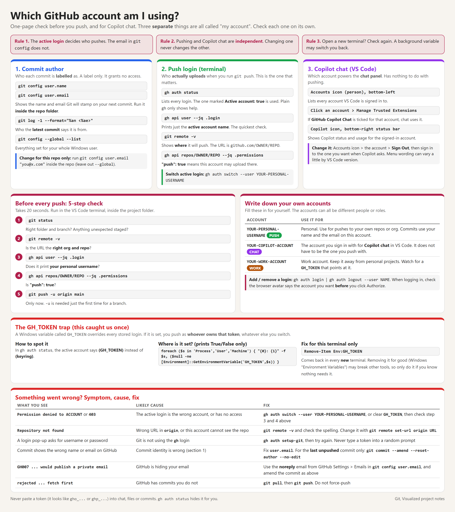

Confused about which GitHub account you are signed in to, for pushing or for Copilot chat? Use this page. Open the image full size.

1. Check your active account
gh auth status | Lists saved accounts. Look for Active account: true. |
gh api user --jq .login | Prints only the username GitHub CLI is currently using. |
git remote -v | Shows where Git fetches and pushes, not which account authenticates. |
Several accounts can be saved; only one is active per GitHub host in GitHub CLI.
2. Switch to a saved account
Personal account:
gh auth switch --hostname github.com --user lepcheone
Work account:
gh auth switch --hostname github.com --user v-ashrestha_microsoft
For another saved account, replace the username. Confirm the switch:
gh api user --jq .login
Switching accounts does not change your remote URL or commit author.
3. Token variable blocks switching
If gh says an environment token is being used, clear both possible overrides in this terminal only:
$env:GH_TOKEN = $null
$env:GITHUB_TOKEN = $null
Then repeat the switch command. Saved credentials are not deleted. If the override returns in a new terminal, update its persistent source.
4. Account is not saved yet
gh auth login --hostname github.com --git-protocol https --web
Follow the browser prompts and sign into the intended account.
5. CLI is correct, but Git uses another login
gh auth setup-git --hostname github.com
Makes HTTPS Git operations use GitHub CLI credentials. This changes GitHub credential configuration across repositories, not just this one. SSH remotes use SSH keys instead.
6. "Repository not found"
git remote -v
gh api user --jq .login
gh repo view OWNER/REPO
gh api repos/OWNER/REPO --jq .permissions.push
Replace OWNER/REPO with the destination, for example lepcheone-org/git-how. Check the URL, active username and repository access. The last command must return true for write access; branch rules may still restrict pushes.
7. Login, destination and author are different
| GitHub login | Who authenticates. Check with gh api user --jq .login. Git can use separate credentials unless configured above. |
| Remote URL | Which repository receives your push. Check with git remote -v. |
| Commit author | Name and email recorded in new commits. Not your login: |
git config user.name
git config user.email
Run inside the repository. Switching terminal accounts also does not switch your Copilot account in VS Code.
Quick routine before pushing
gh api user --jq .login
git remote -v
git status
git push
Confirm the account, destination and branch before the last command. For the first push of main, use git push -u origin main. Push uploads existing commits; stage and commit first only if you have changes to save.
1. git add
What it does: Copies your selected changes from the Working folder into the Staging area. Your working files stay where they are.
When to use it: After you edit files and decide, "These are the changes I want to save next."
Think of it as: Putting items into a shopping basket.
2. git commit
What it does: Takes everything currently in the Staging area and saves a snapshot into your Local repo (your project's history on your computer).
When to use it: When you are ready to record a checkpoint of your work, with a message describing what you did.
Think of it as: Taking a photo of the items in your shopping basket and storing that photo.
3. git push
What it does: Sends your local commits (the snapshots) up to GitHub, when that is your remote (the shared online copy).
When to use it: When you want to back up your committed work online or share it with others.
Think of it as: Uploading those photos to the cloud.
Quick summary of the flow
- Edit files →
git add (put in basket).
git commit (take a photo / save snapshot).git push (upload the photos to GitHub).